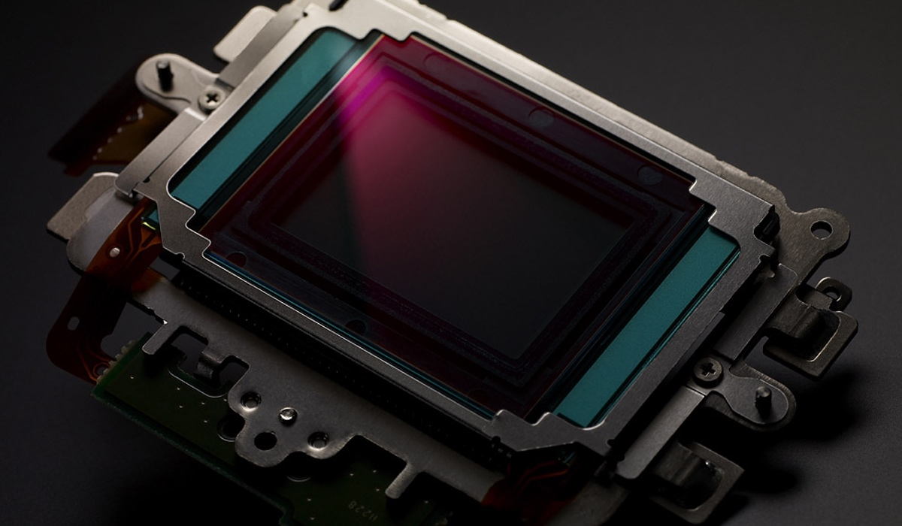
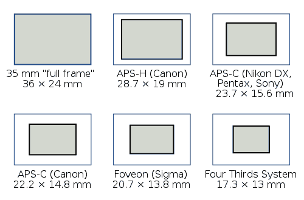
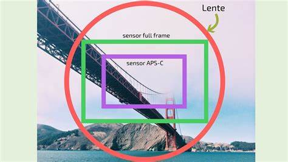

Sensor
El sensor de las cámaras fotográficas está compuesto por millones de pequeños semiconductores de silicio, los
cuales captan los fotones (elementos que componen la luz, la electricidad). A mayor intensidad de luz, más carga
eléctrica existirá.

Estos fotones desprenden electrones dentro del sensor, los cuales se transformarán en una serie de valores digitales
creando un píxel. Por lo tanto cada célula que desprenda el sensor de imagen se corresponde a un píxel o punto. El
sensor hace las veces de película en la fotografía digital.
El resultado del sensor, ya traducidos a formato binario, se guarda en las tarjetas de memoria en forma de ficheros
de imagen
¿Qué es un megapixel?
Un megapixel es un millón de pixeles o puntos.
La resolución de los sensores se mide en megapixels. Son el número de puntos o pixeles que contendrá una imagen
producida por un sensor
Por ejemplo si una imagen tiene un tamaño de 3888 puntos de largo y 2592 de alto, la resolución del sensor será la
multiplicación de ambos, es decir 3888 x 2592 = 10077696 pixeles = 10,1 megapixels.
Podemos decir sin miedo a equivocarnos que cuantos más megapixels más tamaño tendrá el fichero de imagen que
obtenemos. Con esta figura podemos hacernos una idea de la diferencia en densidad entre unos sensores y otros de
algunas cámaras del mercado.

Entonces parece que cuantos más megapixels mejor ¿no?. Bueno es cierto que cuantos más megapixels mayor será
la resolución del sensor pero ¿es la resolución del sensor la que limita la calidad de las fotos?
Habitualmente no. Las lentes suelen estar muy por debajo de la resolución del sensor y por tanto si lo que buscas es
calidad y nitidez es más importante tener unas buenas lentes que tener un buen sensor.
También influye el tamaño físico del sensor. Aquí burro grande. Nada tiene que ver el sensor de 10 megapixels de
una cámara compacta, cuyo tamaño es bien pequeño, con el tamaño de un sensor de 10 megapixels de una cámara
DSLR profesional.
Tamaño de sensor
El tamaño universal de un fotograma de película para cámaras réflex o SLR es de 35mm de largo (la diagonal es de
43mm). Heredado de este formato estandarizado a principios del siglo XX, los sensores de fotograma completo
tienen aproximadamente esa medida. Sin embargo, la mayoría de las cámaras DSLR no disponen de un sensor de ese
tamaño, sino más pequeño, por ello se produce una pérdida o recorte en el campo de visión de los sensores más
pequeños. Este formato de sensor se llama APS. Los sensores de 35mm se llaman Full Frame o de fotograma
completo.

En la imagen anterior podemos ver el recorte de un sensor APS sobre un sensor full frame de 35mm.
Esto afecta a la distancia focal de nuestros objetivos, ya que al sufrir las imágenes un recorte sobre la imagen, las
distancias focales que tienen no son a efectos prácticos las que podemos ver en nuestras fotos.
Cada sensor tiene lo que llamamos un factor de equivalencia para poder convertir las distancias focales de nuestros
objetivos a las distancias focales efectivas. Así, multiplicando por dicho factor de equivalencia obtenemos la distancia
focal real de la foto.
Ejemplo:
-
La 1DS Mark III de Canon es full frame, con lo que su factor de equivalencia es 1. Así un objetivo de 50mm es
en efecto 50mm.
-
Si utilizamos el mismo objetivo en la 1D Mark III (la 1D normal, no la 1Ds), que tiene un factor de
equivalencia de 1,3, esos 50mm equivaldrían a 50 x 1,3 = 65mm.
-
El mismo objetivo en la 450, que tiene un factor de equivalencia de 1,6, equivaldría a 50 x 1,6 = 80mm. De la
misma forma un objetivo 17-50mm equivaldría a un 27-80mm tradicional
¿Y qué es mejor? ¿APS o Full Frame? Pues una vez más depende de para qué lo utilicemos. Si utilizamos la cámara
para fotografía de interiorismo probablemente prefiramos tener un sensor full frame que me permita utilizar un ojo
de pez de 12mm reales que no se convierten en 20mm. E igualmente si utilizamos la cámara para fotografía de
deporte preferiríamos un sensor APS, donde un teleobjetivo 300mm se convierte en uno de 480mm al mismo precio
y con menos peso. Eso sí, ojo al comprar objetivos, que no todos valen para full frame.
Proporciones del sensor
No todos los sensores tienen las mismas proporciones entre el alto y el ancho. De este modo hay fabricantes que
utilizan formato de 4:3, otros de 3:2 y otros (aunque es menos común) de 16:9, cada uno de ellos más apaisados